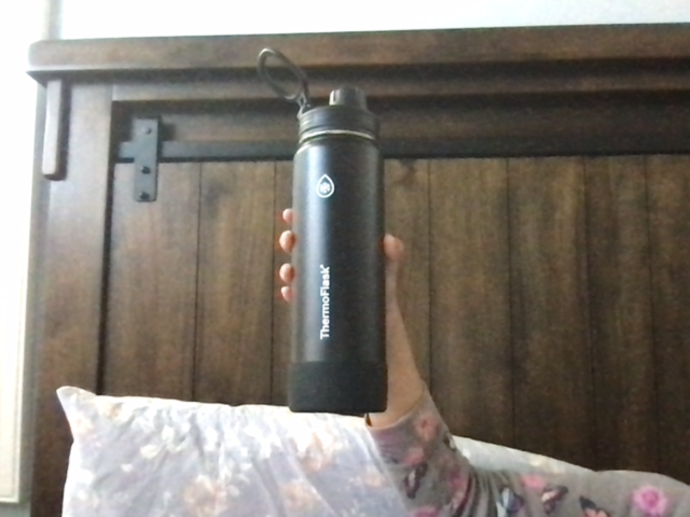
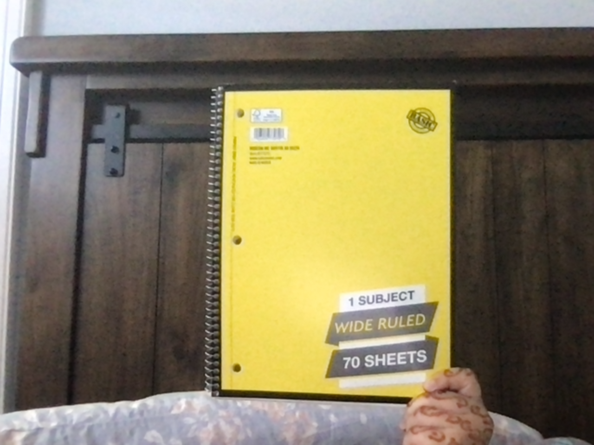
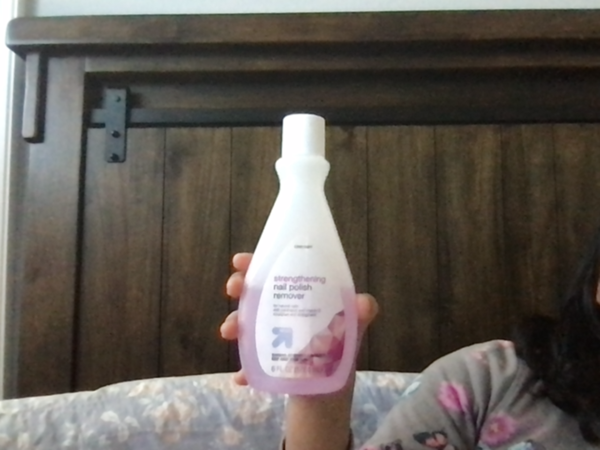
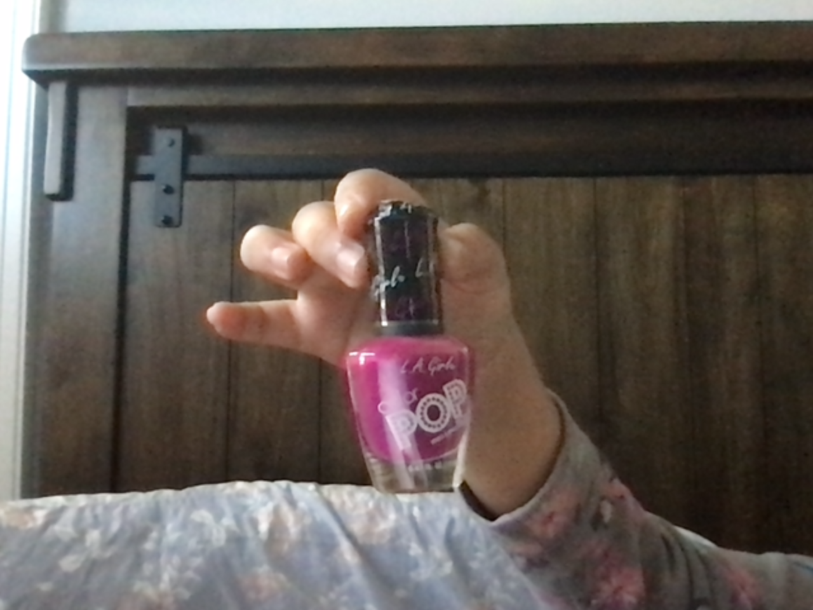

Test Image - Phone
Output on Microsoft Azure -
Cell Phone
Output on Mobilenet Model -
Cellular Telephone, Cellular Phone, Cellphone, Cell, Mobile Phone
Result -
Microsoft and Mobilenet are both accurate, but since Mobilenet has more more description, the Mobilenet Model is more accurate.
Test Image - Water Bottle

Output on Microsoft Azure - Bottle
Output on Mobilenet Model - Hair Spray
Result -
Mircrosoft Azure is most accurate.
Test Image - Notebook

Output on Microsoft Azure - Box, Book
Output on Mobilenet Model - Binder, Ring-Binder
Result -
Microsoft Azure is most accurate
Test Image - Pen
Output on Microsoft Azure - Toothbrush
Output on Mobilenet Model - Screwdriver
Result -
The Mobilenet Model is most accurate.
Test Image - Nail Polish Remover

Output on Microsoft Azure - Wine
Output on Mobilenet Model - Lotion
Result -
The Mobilenet Model is most accurate.
Test Image - Book
Output on Microsoft Azure - Book, Letter
Output on Mobilenet Model - Binder, Ring-Binder, Menu
Result -
Microsoft Azure is most accurate.
Test Image - Hair Comb, Hair Brush
Output on Microsoft Azure - Wooden, Wood
Output on Mobilenet Model - Table Lamp
Result -
Microsoft Azure is the most accurate.
Test Image - Nail Polish

Output on Microsoft Azure - Cosmetics, Bottle
Output on Mobilenet Model - Hair Spray
Result -
Microsoft Azure is most accurate.
Test Image - iPad
Output on Microsoft Azure - Picture Frame, Painting
Output on Mobilenet Model - Television, Television System
Result -
The Mobilenet Model is most accurate.
Test Image - Necklace
Output on Microsoft Azure - Glass
Output on Mobilenet Model - Stethoschope
Result -
Microsoft Azure is most accurate.